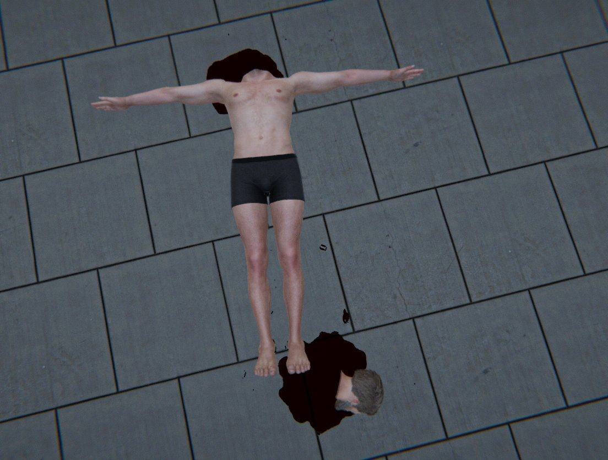
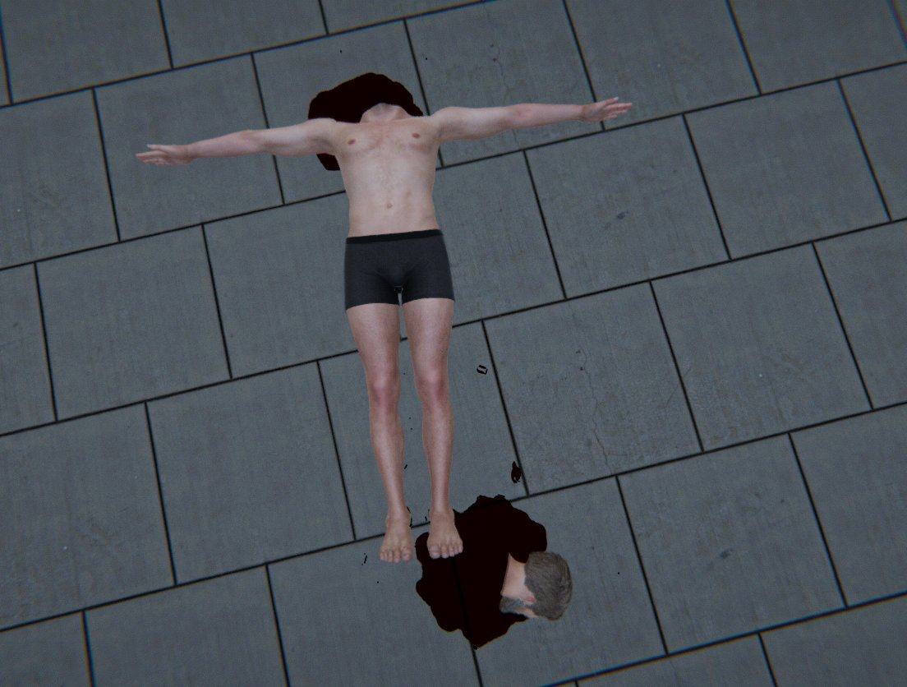

Real-Time Mesh Deformation
This project explores, inside Unity, a solution to dynamically deform and cut animated meshes. The project used NVIDIA FleX as the physics foundation to build upon more complex system.
 



Each mesh is sampled to generate a group of particles connected by clusters. THE NVIDIA FleX uses shape-matching to minimize the error of each particle to their original positions relative to each cluster:
This process allows physical objects to dynamically interact with skinned meshes, such as in the next example:
To cut the geometry, two processes are required: a visual cut (1) and a physical separation (2). In (1) the mesh vertices are split in the cut height and the connected pool separates into two islands. In (2) a similar process is applied to the particles with each own deciding the side they are on. A planar cut was used to simplify the computational cost, but other complex cuts could be applied. If only the physics cut is applied, the mesh still is connected and triangles are incorrectly stretched:
After the cut is executed, the mesh becomes hollow and it is possible to see that there is nothing inside of it. To fix this issue, the both sides vertices are connected to form a face with a different texture.

The diagram below illustrate how such face is created. The planar cut creates two groups of vertices where the plane intersect the mesh. The plane translation and rotation is applied to the vertices, transforming it in a 2D problem. A constrained Delaunay triangulation is then used and the new created vertices are reverted back to the original transformation.
Blood is simulated as a fluid inside NVIDIA FleX. Each particle separated in a cut spawns liquid using a decreasing pulsating function.

The core algorithms developed to perform the cutting both in the physics model and in the mesh were optimized using the Job System and the Burst Compiler. For example, the animation playback which had to be calculated from the clusters to the modified bones by hand was optimized using Burst + Jobs:
Comparing with "Deep Cut", a pre-published paper, ours have slight better performance in a similar model while closing cuts and while continuing the simulation of the dropped parts. Theirs offer a wider variety of cuts.